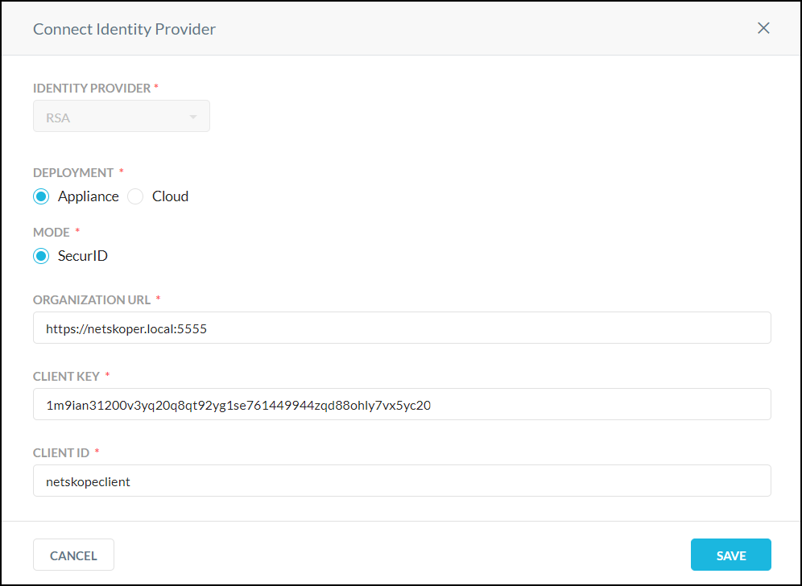

Multi-Factor Authentication
Multi-Factor Authentication can require a user to provide two or more forms of authentication across multiple devices in order to perform certain actions, like accessing files and apps. Step up authentication, which is one ability of multi-factor authentication, allows the user to justify the action. So instead of simply blocking the user from performing an action, the user can perform the action after authentication.
Important
The provisioned Netskope Client username and IdP username must be the same for multi-factor authentication to work successfully. If not, multi-factor authentication fails open. The user is not prompted for multi-factor authentication and activity is allowed.
To use step up authentication, you first need to have an IdP configured in your Netskope tenant, and also you need to know the API URL and API key for your IdP. After you have these, go to Settings > Manage > Multi-Factor Authentication Integration. Currently only Okta and RSA are supported. Follow the steps in the appropriate section below.
Note
Only one multi-factor authentication integration can be used per tenant.
Configure Okta for Multi-Factor Authentication
On the Multi-Factor Authentication Integration page, click Okta to open the Connect Identity Provider dialog box.

Configure these parameters:
Identity provider: The dropdown shows Okta and cannot be changed.
Mode: Select Push Notify or OTP (one-time password)
With Push Notify, the user needs to approve the authentication attempt on his/her registered Okta app. When initiated, the user will receive a push notification to his/her registered Okta app to approve or reject the authentication attempt.
With OTP, the user will be prompted to enter his/her authentication password. The user must enter the password from his/her registered Okta app into the provided field.
Organization URL: Enter the URL where API requests for Okta are sent.
Tip
Your license for multi-factor authentication with Okta should provide the needed Organization URL and Key.
Organization Key: Enter the API key code for Okta.
Click Save.
Configure RSA for Multi-Factor Authentication
On the Multi-Factor Authentication Integration page, click RSA to open the Connect Identity Provider dialog box.
Configure these parameters:
Identity provider: The dropdown shows RSA and cannot be changed.
Deployment: Select Appliance or Cloud.
Mode: Each Deployment type has different Mode options.
Appliance: There is only one mode, SecurID.
 With SecurID, a user will be prompted to enter their authentication token code. A user must enter the token code and PIN combination into the provided field based on the profile configured on RSA Authentication Manager (AM).
Note
If the RSA AM on the appliance is using custom RSA certificates (usually the default), Netskope will not be able to authenticate RSA AM while calling RSA APIs. The custom CA certificate of the RSA AM needs to be added in Netskope UI to authenticate it. To upload your custom CA certificate, refer to Trusted Certificates in Certificates.
RSA SecurID supports different authentication types named PINPad-style (PIN integrated with token), Fob-Style (PIN followed by token), and Tokencode (No PIN required). In the first two authentication types, a user needs both PIN and token (displayed on device) to get authenticated. The last type does not require a PIN.
Netskope supports all three authentication types, but you cannot generate a PIN through Netskope. When a user is created on RSA, and when an existing PIN expires, you need to set a PIN. In both cases, if you try to authenticate an app, Netskope displays a message saying, "Your PIN has expired. Set a PIN and try again." You need to contact your admin or set a new PIN through the RSA-SSC (self service console) page provided to by your admin.
Cloud: Select Token or Approve.

With Token, the user will be prompted to enter his/her authentication token code. The user must enter the token code from his/her registered RSA Authenticate app into the provided field.
With Approve, the user needs to approve the authentication attempt on his/her registered RSA Authenticate app. When initiated, the user will receive a push notification to his/her registered RSA Authenticate App to approve or reject the authentication attempt.
Organization URL: Enter the URL where API requests for RSA are sent.
Tip
Your license for multi-factor authentication with RSA should provide the needed Organization URL and Client Key.
Client Key: Enter the API key code for RSA.
Client ID: (Appliance only) Enter the client ID.
Click Save.
Use Multi-Factor Authentication in a Policy Action
When configuring an Real-time Protection policy, choose Multi-Factor Authentication in the Action section. This way, when a user commits a DLP violation, for example, they can be allowed to perform a function they would otherwise be blocked from doing by providing authentication.
Multi-Factor Authentication as an action is available only for activities for which user-alert as an action is also possible.